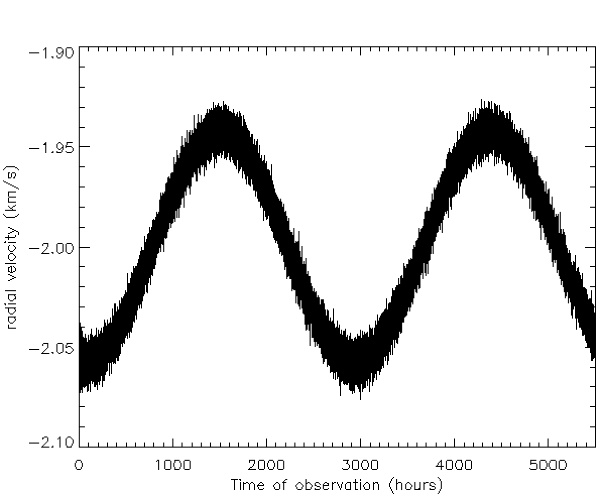

Forrige side🙂 🙁Tips til parameterestimering
Da har vi kommet til veis ende i dette kapittelet. Av god gammel vane, avslutter vi med noen tips til programmering og til slutt til debugging. I innleveringsoppgavene/prosjekt skal du analysere noen radialhastighetskurver med støy for å finne massen til en ekstrasolar planet. Da trenger du å bruke minste kvadraters metode eller χ2 avhengig av om standardavviket til støyen varierer eller ikke. Tenk deg at du skal finne den beste mulige modellen (og dermed de beste mulige parameterene v*, P og t0) til følgende kurve:

Trykk her!